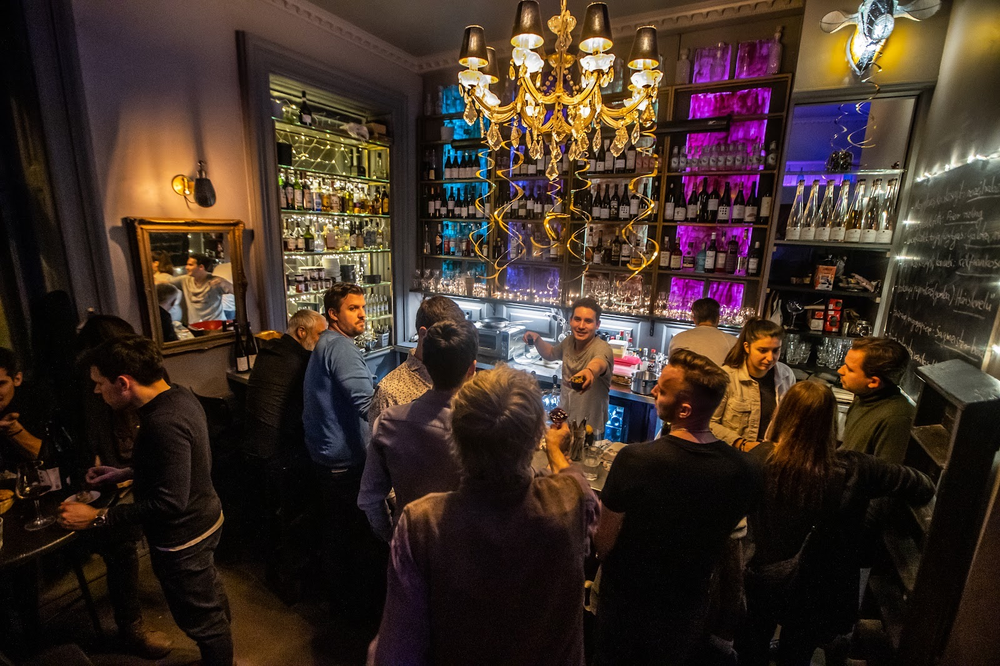
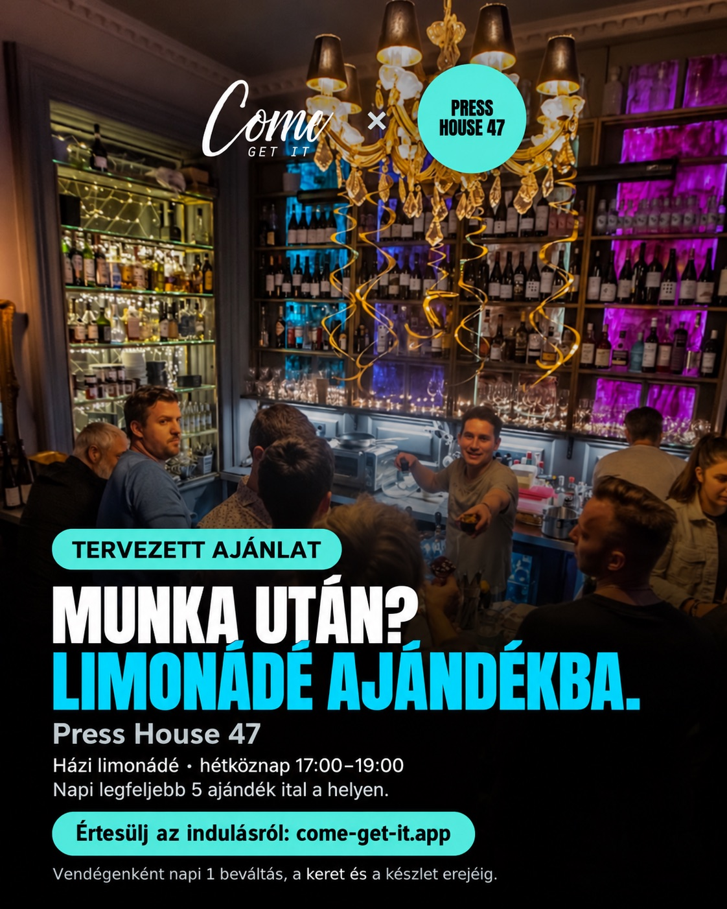
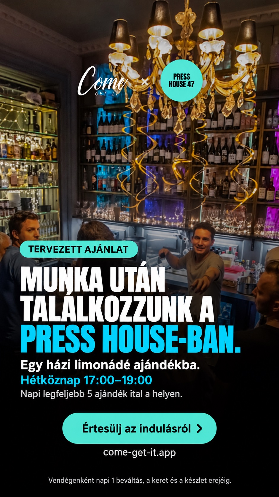
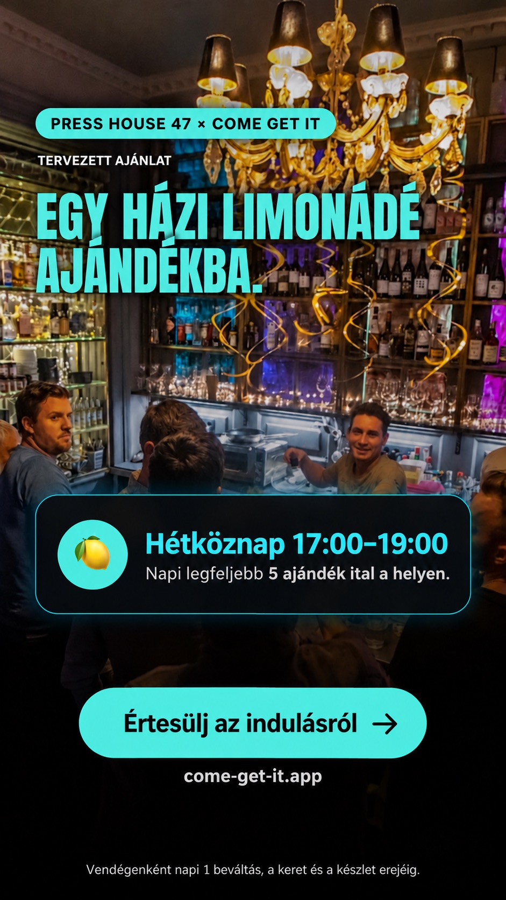
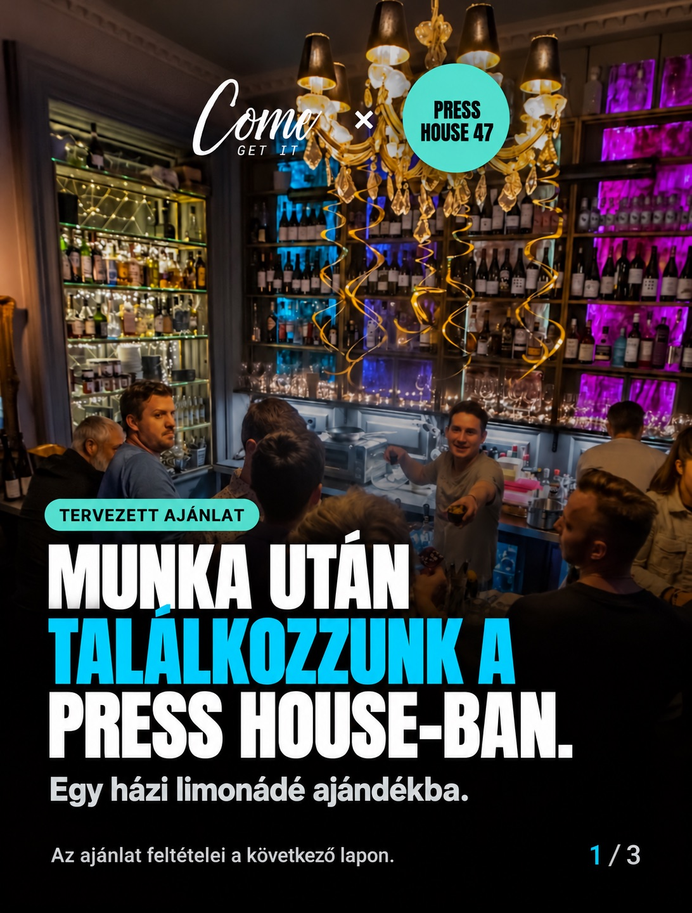
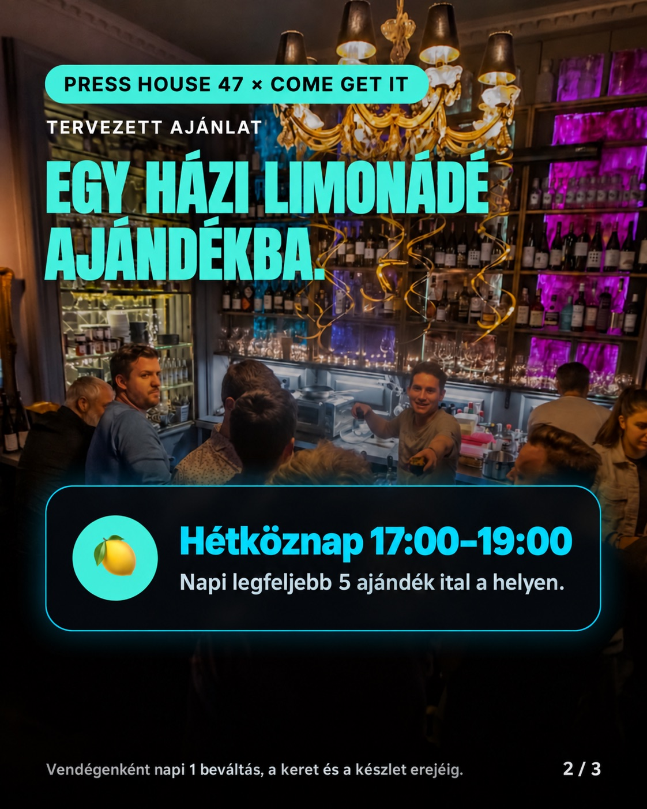
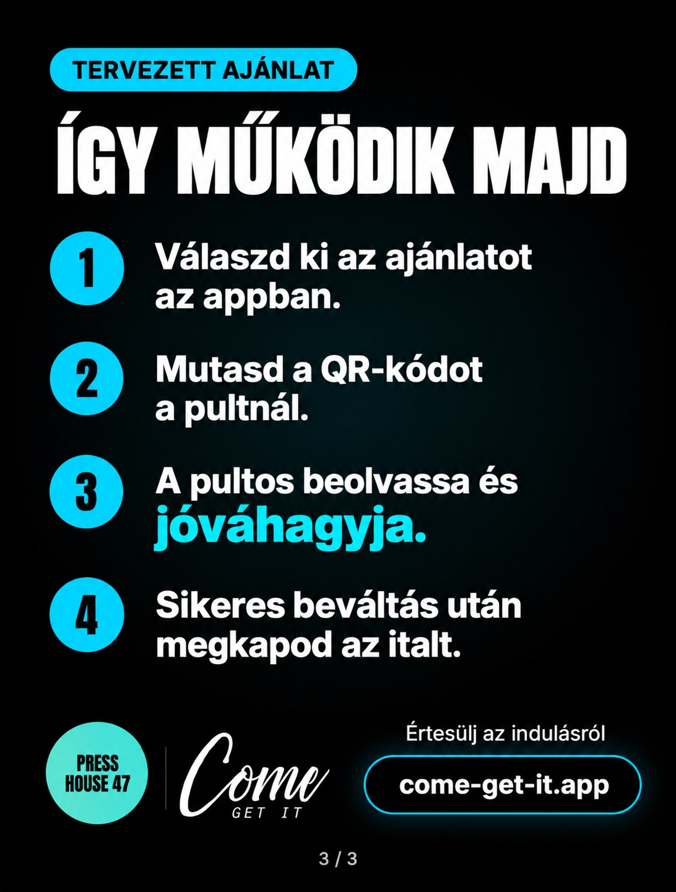

Partnerajánlat a Press House 47-nek
Hozzátok üljenek be
munka után.
Egy ajándék limonádé jó ok lehet a betérésre. Ha a vendég marad még egy italra vagy ennivalót is rendel, abból már bevételetek lehet.

Munka utáni találkozó a Press House-ban.Kezdjük egy négyhetes próbával.
Házi limonádéval, előre egyeztetett kerettel.
- A próba hossza
- 4 hét
- Platformdíj a próba alatt
- 0 Ft
- Hétköznap
- 17–19óráig
- Ajándék limonádé
- Max. 5/ nap
Az ital költségét ti álljátok. A kezdőnapot és a feltételeket együtt véglegesítjük.
A vendég szemszögéből
Egy ok a betérésre.
Egy lehetőség a további rendelésre.
- 1
Rátok talál az appban
Találkozóhelyet keres munka után. Az ajándék ital segíthet, hogy titeket válasszon.
- 2
Beül és beváltja az italt
Megérkezik, bemutatja a QR-kódját, és a pultosi jóváhagyás után megkapja a limonádét.
- 3
Maradhat még egy körre
Ha rendel még egy italt vagy ennivalót, azért már fizet. Ez már az első látogatáskor bevételt hozhat.
Egy lehetséges rendelés
A pultnál néhány egyszerű lépés
QR-kód beolvasása ellenőrzés és jóváhagyás sikeres beváltás ital kiadása
A beállítást mi intézzük.
Indulás előtt a csapatotokkal is végigpróbáljuk a beváltást.
Mi ezt vállaljuk
- Beállítjuk az ajánlatot az appban.
- Megmutatjuk a beváltást a pultosoknak.
- Elkészítjük a posztokat a saját fotóitokból.
- Heti összesítést adunk a beváltásokról.
Tőletek ezt kérjük
- A vállalt italokat az egyeztetett keretig.
- 3–5 saját fotót, amit felhasználhatunk.
- Kb. 10 percet a csapat betanítására.
- Rövid heti visszajelzést: mit rendeltek még a vendégek?
Minden posztot ti hagytok jóvá, mielőtt megjelenik.
A költséget előre kiszámoljuk.
A napi keretet és a limonádé saját önköltségét vesszük alapul.
5 ital × 150 Ft önköltség
A 150 Ft csak becslés. A tényleges összeget a saját önköltségetekből számoljuk; a munka és az egyéb költségek ezen felül értendők.
Négy hét után együtt értékelünk.
Hányan váltották be az italt? Mit rendeltek még? A beváltási számok és a ti tapasztalataitok alapján döntünk a folytatásról, a módosításról vagy a lezárásról.
A próba részletes feltételei
- Ital és keret
- Javaslatunk: házi limonádé, hétköznap 17:00–19:00, legfeljebb napi öt beváltással. A pontos italt, adagot, vállalt napokat és esetleges kizárásokat a kezdés előtt közösen rögzítjük. Felhasználónként naponta egy beváltás, a megállapodott feltételekkel és készletig.
- Sikeres beváltás
- A QR-kód megnyitása még nem beváltás. A pultos beolvassa, ellenőrzi és jóváhagyja; az italt a sikeres visszajelzés után adja ki. Ezt indulás előtt együtt kipróbáljuk. A kb. 10 perces betanítást a csapat igényéhez igazítjuk.
- Díj és költségek
- A négyhetes próba alatt nincs platformdíj. Az ajándék ital költségét a hely viseli. A próba után közösen döntünk a folytatásról; a feltételekről előre, személyesen egyeztetünk. A fenti számítás példa, nem igazolt önköltség vagy vállalt költségplafon. A végleges összeget a saját önköltség, a vállalt napok és a külön számolt munka- és egyéb költségek adják.
- Szüneteltetés és kilépés
- Az ajánlat a partnerfelületen azonnal szüneteltethető; ezt a beállításkor megmutatjuk. A próbából hét nappal előre, írásban lehet kilépni.
- Adatok és kommunikáció
- Összesített beváltási számokat kaptok, személyes vendégadatokat nem. A további rendeléseket a ti visszajelzéseitekből értékeljük. A hely fotóit és minden kommunikációs anyagot megjelenés előtt jóváhagyásra küldünk.
- Másik ital később
- A korábban felmerült fröccs külön egyeztetéssel és költségszámítással próbálható ki. Alkoholos ital csak nagykorúaknak kínálható; alkoholmentes választás marad. Két egymást követő időszak különbsége önmagában nem bizonyítja, melyik ajánlat hatásosabb.
Közösségi megjelenés
Posztokat is készítünk
rólatok.
Posztok, sztorik és rövid videó a helyetekről és az ajándék italról.
Látványtervek a későbbi bejelentéshez. Csak a jóváhagyásotok után jelennek meg, a végleges ajánlattal és fotókkal.



Lapozható poszt · 3 kép
A képek kattintással nagyíthatók.

